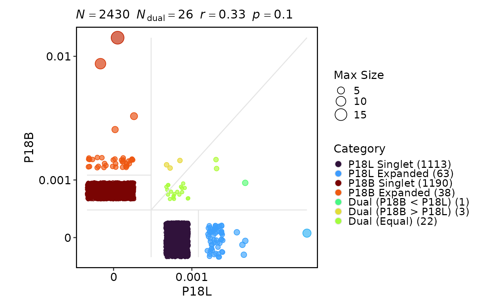
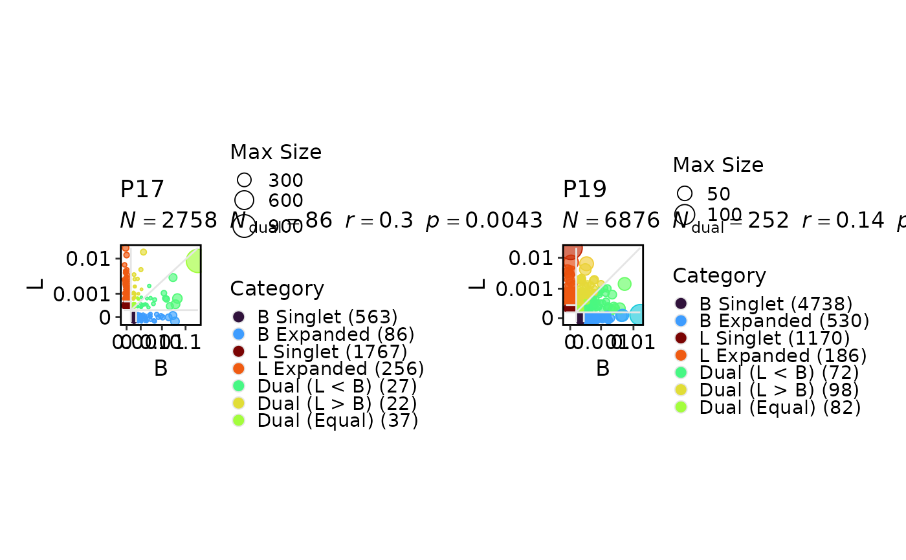
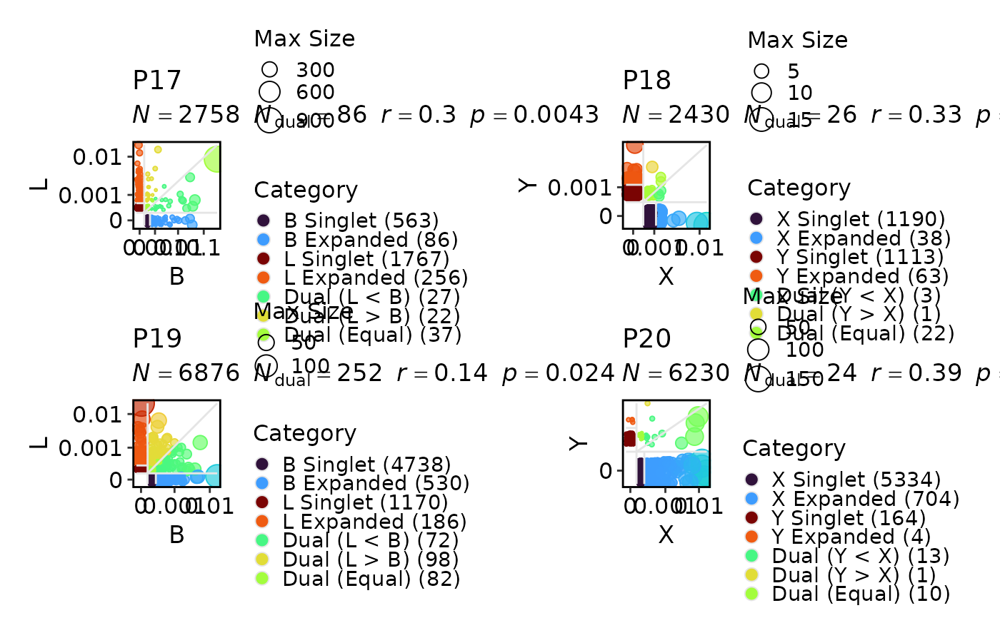
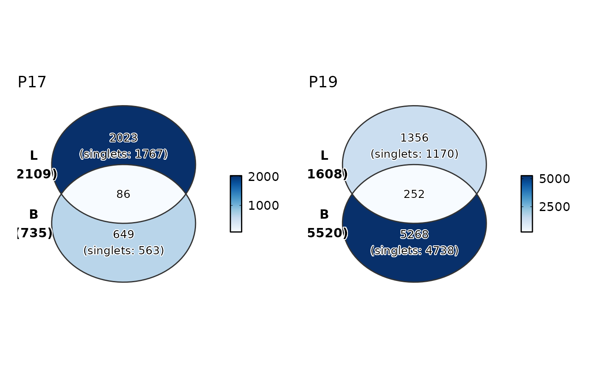
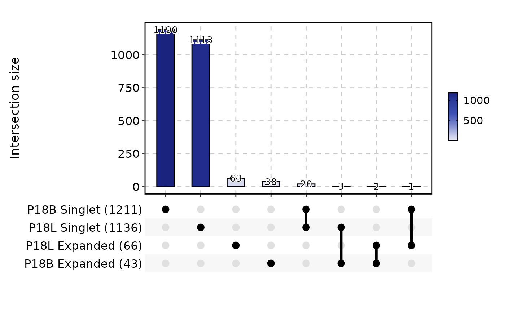
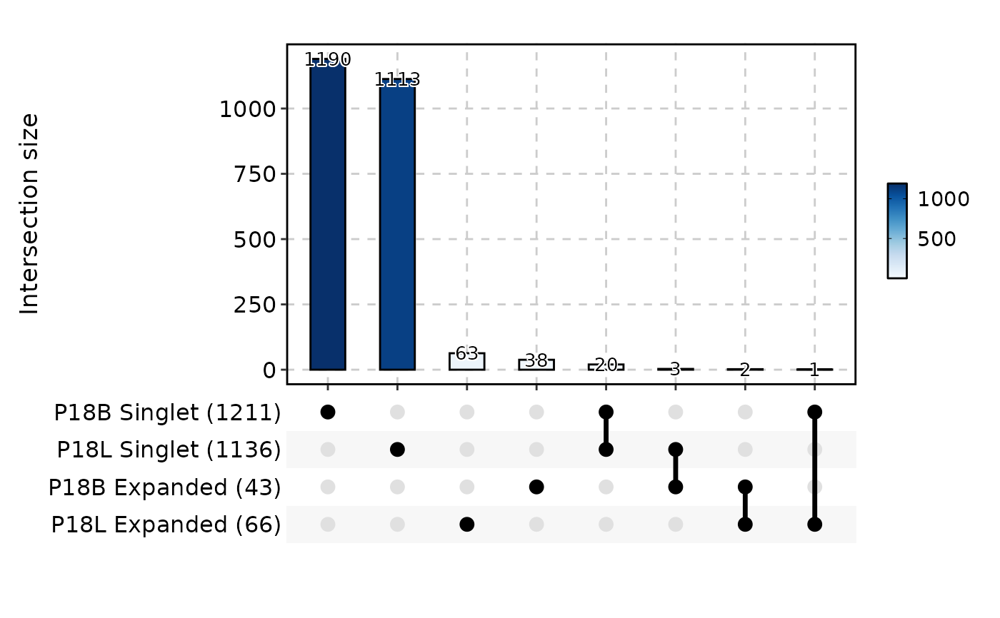
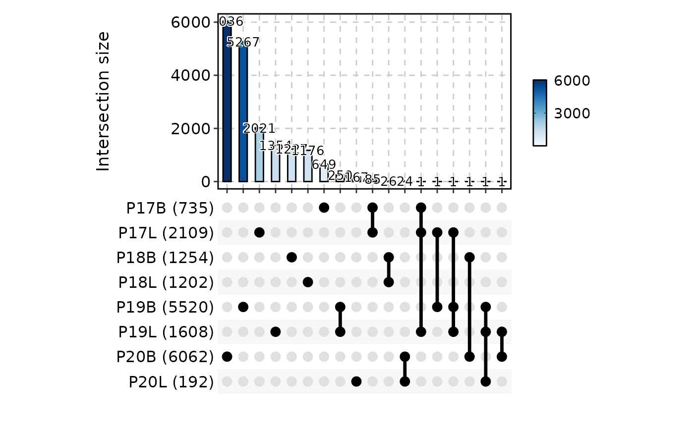

Visualizes the sharing (residency) of T-cell or B-cell clones across different samples or metadata groups. Clonal residency analysis reveals how clonotypes are distributed — whether a clone is private to one condition or shared across multiple conditions — which is critical for understanding immune responses, tracking antigen-specific clones, and identifying public vs. private repertoires.
ClonalResidencyPlot supports three visualization modes:
Scatter plot — Compares clone sizes between two groups on log-transformed axes. Points are colored by clonal category: singletons (unique to one group), expanded clones, and dual clones (shared between groups). Correlation statistics are displayed in the subtitle.
Venn diagram — Shows the overlap of clone sets between up to 4 groups. When
with_class = TRUE, labels include singlet counts.UpSet plot — Shows intersection sizes for any number of groups. When
with_class = TRUE, clone classes (singlet, expanded) are displayed as separate intersections.
Usage
ClonalResidencyPlot(
data,
clone_call = "aa",
chain = "both",
plot_type = c("scatter", "venn", "upset"),
group_by = "Sample",
group_by_sep = "_",
groups = NULL,
facet_by = NULL,
split_by = NULL,
split_by_sep = "_",
scatter_cor = "pearson",
scatter_size_by = c("max", "total"),
with_class = TRUE,
order = NULL,
combine = TRUE,
nrow = NULL,
ncol = NULL,
byrow = TRUE,
...
)Arguments
- data
The product of
scRepertoire::combineTCR(),scRepertoire::combineBCR(), orscRepertoire::combineExpression().- clone_call
How to define a clone. One of
"gene","nt","aa"(default),"strict", or a custom variable name in the data.- chain
Which chain(s) to use:
"both"(default),"TRA","TRB","TRD","TRG","IGH", or"IGL".- plot_type
The visualization type. One of
"scatter"(default),"venn", or"upset".- group_by
Metadata column used to define the groups being compared. Default is
"Sample". Multiple columns are concatenated usinggroup_by_sep.- group_by_sep
Separator used when concatenating multiple
group_bycolumns. Default is"_".- groups
The groups to compare. See the The groups parameter section for detailed usage. Default is
NULL(all groups).- facet_by
Not supported for
ClonalResidencyPlot. Must beNULL.- split_by
Metadata column used to split the data into separate plots. Default is
NULL.- split_by_sep
Separator used when concatenating multiple
split_bycolumns. Default is"_".- scatter_cor
Correlation method for scatter plots. One of
"pearson"(default),"spearman", or"kendall". Correlation is computed on log-transformed clone sizes of dual (shared) clones.- scatter_size_by
How point sizes are determined in scatter plots.
"max"(default) — Size reflects the larger clone size between the two groups."total"— Size reflects the sum of clone sizes across both groups.
- with_class
Logical; if
TRUE(default), clonal class information (singlet vs. expanded) is included in Venn and UpSet plot labels. Only applicable for"venn"and"upset"plot types.- order
A named list controlling the order of factor levels. List names are column names; list values are the desired order. Default is
NULL.- combine
Logical; if
TRUE(default), multiple plots are combined into a single layout usingplotthis::combine_plots().- nrow
Number of rows in the combined plot layout. Default is
NULL(auto-determined).- ncol
Number of columns in the combined plot layout. Default is
NULL(auto-determined).- byrow
Logical; if
TRUE(default), the combined layout is filled row by row.- ...
Additional arguments passed to the underlying plotthis function:
"scatter"—plotthis::ScatterPlot()(palette,palcolor,title, ...)"venn"—plotthis::VennDiagram()(palette,alpha, ...)"upset"—plotthis::UpsetPlot()(palette, ...)
Note
Scatter plot group limits: Each scatter plot compares exactly two
groups. When more than two groups exist and groups is not specified
with ":" notation, all pairwise combinations are generated
automatically.
Venn diagram group limits: Venn diagrams support at most 4 groups.
For more groups, use plot_type = "upset" instead.
The groups parameter
The groups parameter controls which groups are compared and how they
are displayed:
NULL(default): All levels of thegroup_bycolumn are used. For scatter plots, all pairwise combinations are plotted.Character vector: Specifies a subset of groups to include. For scatter plots, the specified pairs are plotted individually; use
":"notation for explicit pairings (e.g.,c("L:B", "Y:X")compares L vs B and Y vs X).Named vector/list: The names are used as display labels and the values match groups in the data. For example,
c(B = "P17B", L = "P17L")labels groups as "B" and "L". For scatter plots, usec("L:B" = "group1:group2")where the first group in the pair is on the y-axis and the second is on the x-axis.
Examples
# \donttest{
set.seed(8525)
data(contig_list, package = "scRepertoire")
data <- scRepertoire::combineTCR(contig_list,
samples = c("P17B", "P17L", "P18B", "P18L", "P19B","P19L", "P20B", "P20L"))
data <- scRepertoire::addVariable(data,
variable.name = "Type",
variables = factor(rep(c("B", "L", "X", "Y"), 2), levels = c("Y", "B", "L", "X"))
)
data <- scRepertoire::addVariable(data,
variable.name = "Subject",
variables = rep(c("P17", "P18", "P19", "P20"), each = 2)
)
ClonalResidencyPlot(data, groups = c("P18B", "P18L"))

ClonalResidencyPlot(data, group_by = "Type", groups = c("L", "B"),
split_by = "Subject")
#> Warning: [ClonalResidencyPlot] Not both groups 'L, B' is not present in the data for 'P18'. Skipping.
#> Warning: [ClonalResidencyPlot] Not both groups 'L, B' is not present in the data for 'P20'. Skipping.

ClonalResidencyPlot(data, group_by = "Type", groups = c("L:B", "Y:X"),
split_by = "Subject")
#> Warning: [ClonalResidencyPlot] Not both groups 'Y, X' is not present in the data for 'P17'. Skipping.
#> Warning: [ClonalResidencyPlot] Not both groups 'L, B' is not present in the data for 'P18'. Skipping.
#> Warning: [ClonalResidencyPlot] Not both groups 'Y, X' is not present in the data for 'P19'. Skipping.
#> Warning: [ClonalResidencyPlot] Not both groups 'L, B' is not present in the data for 'P20'. Skipping.

ClonalResidencyPlot(data, plot_type = "venn", groups = c("B", "L"),
group_by = "Type", split_by = "Subject")

ClonalResidencyPlot(data, groups = c("P17_B", "P17_L", "P18_X", "P18_Y"),
plot_type = "venn", with_class = TRUE, palette = "Blues",
group_by = c("Subject", "Type"))
#> Multiple columns are provided in 'group_by'. They will be concatenated into one column.
#> Warning: Unknown or uninitialised column: `.split`.

ClonalResidencyPlot(data, plot_type = "upset", groups = c("P18B", "P18L"))

ClonalResidencyPlot(data, plot_type = "upset", with_class = FALSE)

# }